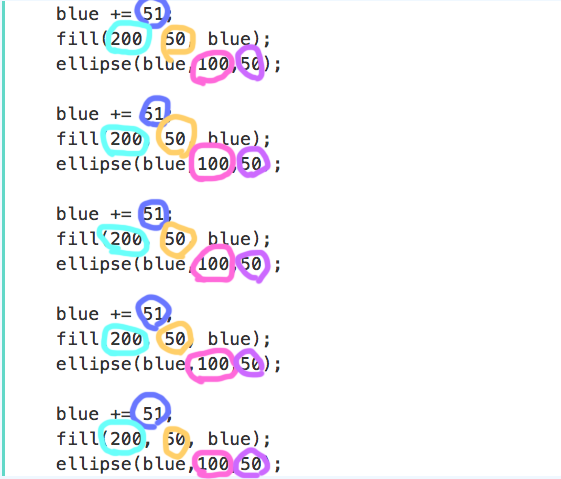

By default, the color() function will take either 1 argument for grayscale or 3 arguments for rgb.
var gray = color(100); // gray
var pink = color(255, 0, 200); // pinkWe can also use conventional HTML color names and HEX values.
var blue = color("blue"); // blue
var red = color("#ff0000"); // redThe fill() function sets the color of the fill for all drawable elements like shapes and lines.
fill(51);
rect(25, 25, 100, 100);Color values saved in variables can also be used as colors.
fill(pink);
rect(125, 25, 100, 100);The function noFill() turns the fill off.
noFill();
rect(150, 50, 100, 100);The stroke() function works in a similar way, but changes the stroke of the drawable element.
stroke(blue);
triangle(50, 50, 50, 100, 100, 50);The function noStroke() turns the stroke off (remember to turn the fill back on or you won't see anything!).
noStroke();
fill(red);
ellipse(200, 200, 60, 60);The background() function sets the color of the canvas element, and can use grayscale, rgb or HTML values, just like stroke and fill.
var green = color(0, 190, 120);
background(green);Make sure to draw you background before drawing anything else.
In the last class we drew a self portrait, using
// self portrait
function setup() {
createCanvas(640, 480);
background("black");
noStroke();
// head
fill("yellow");
ellipse(300, 300, 300, 300);
// eyes
fill("orange");
rect(175, 175, 50, 50);
rect(275, 175, 50, 50);
// mouth
fill("orange");
triangle(175, 400, 325, 425, 345, 380);
// nose
stroke("orange");
strokeWeight(6);
line(250, 245, 200, 350);
// ear
fill("yellow");
arc(450, 280, 70, 90, PI+1, HALF_PI+1);
}We can improve this program using variables. My self portrait uses two hardcoded values for colors: "yellow" and "orange". If I want to change the color of any of the parts of the face I need to rewrite this. If I use a variable instead, I can change all of the shapes using each color and change them all at the same time.
var base = "yellow";
var parts = "orange";
// head
fill(base);
ellipse(300, 300, 300, 300);
// eyes
fill(parts);
rect(175, 175, 50, 50);
rect(275, 175, 50, 50);
// mouth
fill(parts);
triangle(175, 400, 325, 425, 345, 380);
// nose
stroke(parts);
strokeWeight(6);
line(250, 245, 200, 350);
// ear
fill(base);
arc(450, 280, 70, 90, PI+1, HALF_PI+1);Now I can change the whole drawing by changing one line:
var parts = "green";We can also do this with numbers. Noticed I used the same size for the eyes width and height in my self portrait? I can use one variable to save that value and adjust all of those dimensions at one time:
// eyes
var eyeSize = 50;
fill(parts);
rect(175, 175, eyeSize, eyeSize);
rect(275, 175, eyeSize, eyeSize);Variables can be updated using operators, so they change throughout the program.
In this example, we can change the blue value of a color as we use it in the sketch.
function setup() {
createCanvas(300, 200);
noStroke();
background(220);
var blue = 0;
fill(200, 50, blue);
ellipse(blue,100,50);
}Notice how the blue variable is being use for the blue color in fill and the x position in ellipse. The name of the variable does not influence the way the variable behaves. It simply represents a piece of data, in this case a number.
Let's repeat this code but we'll change the blue value by incremementing it.
blue += 51;
fill(200, 50, blue);
ellipse(blue,100,50);
blue += 51;
fill(200, 50, blue);
ellipse(blue,100,50);
blue += 51;
fill(200, 50, blue);
ellipse(blue,100,50);
blue += 51;
fill(200, 50, blue);
ellipse(blue,100,50);
blue += 51;
fill(200, 50, blue);
ellipse(blue,100,50);
What other values could be made into variables? What numbers are repeated?
Any number that is used over and over can be turned into a variable. This makes the code more efficient and easier to change.
var blue = 0; // blue color value and x position
var blueUpdate = 51; // change to blue color
var red = 200; // red color value
var green = 50; // green color value
var y = 100; // y value of ellipse
var sz = 50; // size of ellipse
fill(red, green, blue);
ellipse(blue,y,sz);
blue += blueUpdate;
fill(red, green, blue);
ellipse(blue,y,sz);
blue += blueUpdate;
fill(red, green, blue);
ellipse(blue,y,sz);
blue += blueUpdate;
fill(red, green, blue);
ellipse(blue,y,sz);
blue += blueUpdate;
fill(red, green, blue);
ellipse(blue,y,sz);
blue += blueUpdate;
fill(red, green, blue);
ellipse(blue,y,sz);